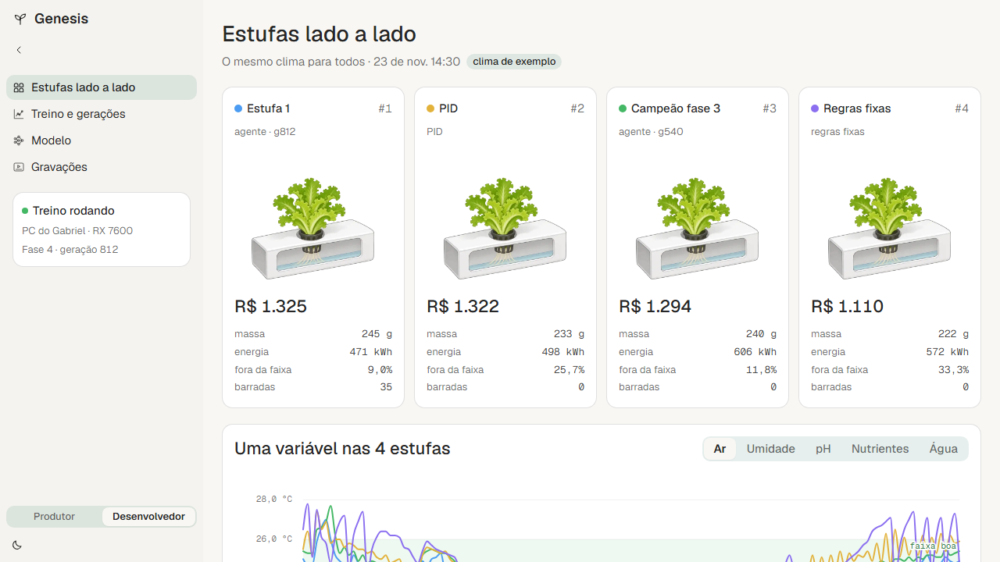
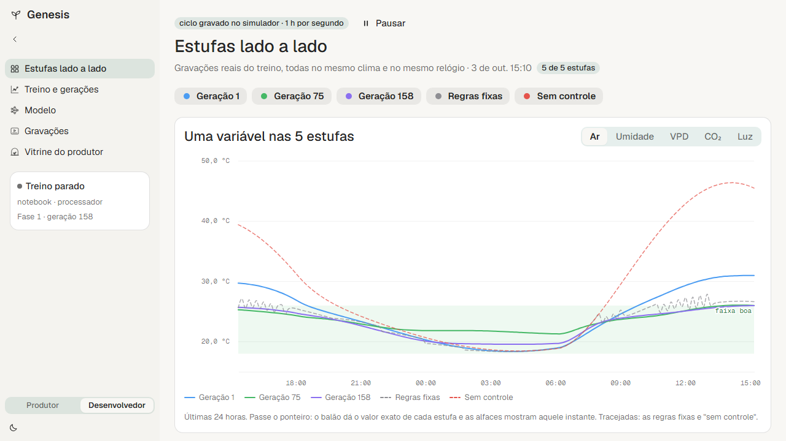
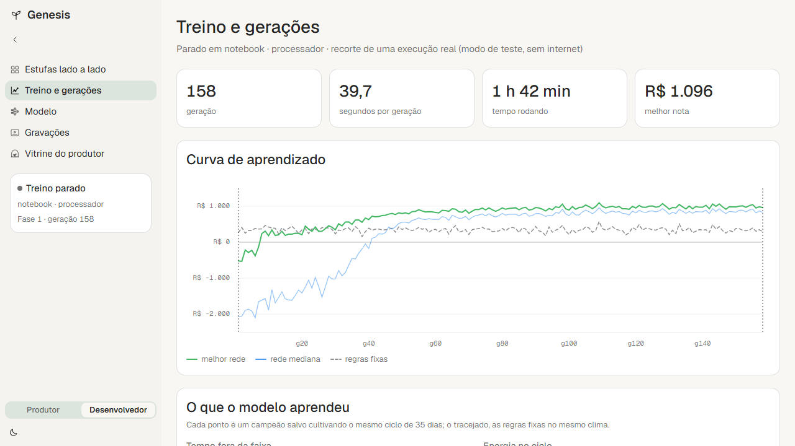
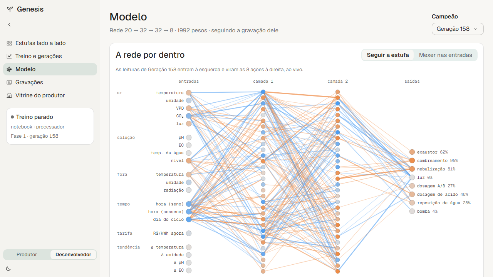

O modo Desenvolvedor com dado real
As três páginas de análise do Desenvolvedor passaram a usar só as gravações reais do treino. Estufas lado a lado compara quantas estufas o Desenvolvedor quiser (por padrão: o campeão da geração 1, um intermediário, o final, as regras fixas e "sem controle"), no mesmo clima e no mesmo relógio. Treino e gerações ganhou "o que o modelo aprendeu", geração a geração. Modelo deixou claro o que pesou em cada decisão e os acertos e erros da gravação.
Antes e depois




Capturas: docs/revisao-visual/passo-12/.
O que foi feito, e por quê
Estufas lado a lado
- As estufas são as gravações da execução (10 na semente 9). Um botão por gravação liga e desliga; só as ligadas baixam a gravação (cada uma ~270 KB pela rede).
- O gráfico "Uma variável nas N estufas" (o ponto forte da página, nas palavras do Gabriel): largura toda, 380 px de altura, uma linha por estufa, a faixa boa, o balão com o valor de cada uma. As variáveis são as do ar (temperatura, umidade, VPD, CO₂, luz): pH, EC e água são fixos na fase 1 e dariam linhas iguais.
- Os cartões ocupam a largura (grade com
auto-fit): com 5 ligadas, uma linha de 5; com 3, três cartões largos. Cada um mostra a nota do treino e a sobra do Dinheiro, lado a lado.
Se a cor seguisse a posição na seleção, desligar uma estufa trocaria a cor das outras. Cada estufa tem a sua: regras fixas em cinza tracejado, "sem controle" em vermelho tracejado (as duas réguas, sempre reconhecíveis), e os campeões em sequência pela geração.
O "#1, #2" de antes ordenava pelo lucro. Com dados reais, as regras fixas ficam em 1º no lucro (gastam 3 vezes menos energia) e em último na nota do treino (ficam mais tempo longe do meio da faixa). Um ranking escolheria um dos dois critérios sem dizer. Os cartões mostram os dois números e deixam a comparação para quem olha.
Treino e gerações: o que o modelo aprendeu
Quatro gráficos de linha (tempo fora da faixa, energia, massa na colheita e nota), um ponto por campeão salvo, com as regras fixas como linha tracejada de referência. Os pontos vêm do resumo de cada gravação (passo 09): o mesmo ciclo de 35 dias para todos. Só os pontos que existem: o treino salva um campeão a cada 25 gerações, e o da geração 1 foi refeito e conferido. A linha liga os pontos medidos; não há valor inventado entre eles. "Comparar gerações" continua na largura toda.
Modelo
- O que mais pesou nesta decisão virou uma frase: "A rede pede o exaustor em 62% agora. Quem mais empurrou para ligar: … Quem mais empurrou para desligar: …", ao lado das barras, com a legenda de cor e o que é p.p. escrita embaixo (os "?" saíram no passo 08).
- Acertos e erros: três números grandes (saiu da faixa, voltou para a faixa, segurança barrou) que filtram a lista; cada linha abre a gravação naquele passo exato (antes abria "a gravação mais recente na mesma hora do dia").
- Saiu "Como lidou com cada perturbação" (passo 08).
Números
| Estufa (semente 9, ciclo inteiro) | Nota do treino | Energia | Fora da faixa |
|---|---|---|---|
| Geração 1 | −R$ 515 | 527 kWh | 84,9% |
| Geração 75 | R$ 976 | 628 kWh | 49,7% |
| Geração 158 | R$ 1.080 | 453 kWh | 49,3% |
| Regras fixas | R$ 420 | 157 kWh | 75,5% |
| Sem controle | −R$ 8.462 | 0 kWh | 99,9% |
Fonte: o índice da reavaliação (passo 09), que é o que os cartões e os gráficos mostram.
| Testes | Resultado |
|---|---|
| e2e: a comparação mostra geração 1, 75 e 158, regras fixas e sem controle; desligar uma muda para "4 estufas" | passa |
| e2e: Treino com os quatro gráficos de "o que aprendeu"; Modelo com a frase e os três números | passam |
O que deu errado ou surpreendeu
O seletor de campeão tinha um item só. Ele mostrava "o campeão de cada fase do currículo"; como só existe a fase 1, sobrava um campeão. Agora lista todos os salvos.
O eixo da curva de aprendizado cortava "R$ 1.000". A margem esquerda era de 64 px, pensada para notas menores; com a nota real passando de mil, subiu para 84 px.
Como reproduzir
cd dashboard
npx playwright test moldura -g desenvolvedor
MSYS_NO_PATHCONV=1 CAPTURAS=passo-12 ROTAS="/dev,/dev/treino,/dev/modelo" npx playwright test capturas -g light --project=desktopEm aberto
- Escolher a execução (sementes 7, 8, 9) nas páginas do Desenvolvedor: hoje é sempre a mais recente.
- O "Lado a lado" mostra as últimas 24 h; um modo "ciclo todo" fica para depois.